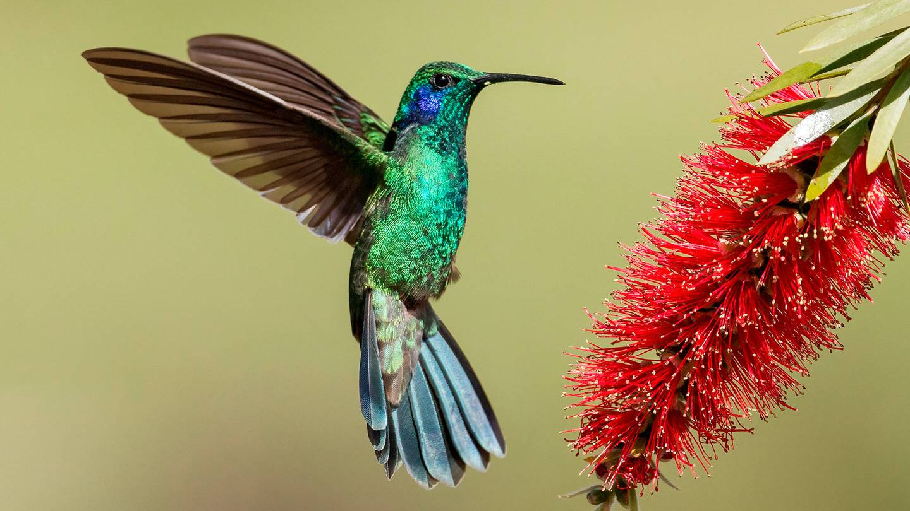

Colibri es un género de aves apodiformes pertenecientes a la subfamilia de los troquilinos (Trochilinae). El género agrupa a cinco especies con una distribución principalmente neotropical.
Las especies que forman el género Colibri tienen un tamaño que oscila entre 9,5 y 15 cm, y un peso de 4,8 a 8,5 g. Aunque son aves pequeñas, no son las más pequeñas, dado que estos pertenecen al género Mellisuga. Tienen cola amplia, bifurcada o redondeada. El pico es negro y delgado, relativamente largo y curvado, y tienen una larga lengua en forma tubular. El plumaje de tres de las cuatro especies es principalmente verde o gris claro. Los machos tienen una mancha violeta-azul corriendo hacia atrás y abajo del ojo (cuyas plumas se levantan cuando están excitados) y un parche brillante sobre la garganta. El plumaje de las hembras se parece al de los machos, pero los parches del oído y de la garganta son más pequeños. Construyen nidos en forma de copa con los restos de hilos, ramas y plumas amoldadas mediante el lengüeteo y el apisonamiento. Suelen poner 2 huevos de color blanco. Mientras incuban, son agresivamente territoriales e impiden el fisgoneo de otras avecillas, inclusive de la misma especie, en la cercanía del nido. A pesar de que muchos mueren durante su primer año de vida, especialmente en el vulnerable periodo entre la incubación y el momento de abandonar el nido, aquellos que sobreviven viven una media de entre 3 y 4 años.
« Atras